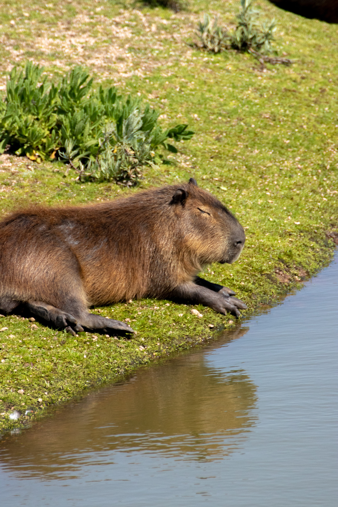

Hello!
Welcome to my little corner of the internet.
This website is where I document projects, ideas and whatever else I'm currently making.
It also gives me somewhere to learn web development while building something useful.
Frequently Asked Questions
Why a capybara?
Hydrochoerus hydrochaeris is the GOAT and you know it.
Why the nature pictures?
Maybe it's because of Steve Backshaw. Maybe it's because of Brown. Or maybe it's because I'm cursed with too much natural knowledge such that I permanently see the world through this pseudo-anthropological lens.
Why build this website?
To learn HTML and CSS while creating somewhere to document everything I make.
Favourite project?
Minecraft Guess Who. It's probably the project I'm most proud of so far.
Tea or coffee?
Neither. What is wrong with people? Why did ChatGPT even suggest this question? It is so outrageous that people might not be addicted to caffeine or other substances?